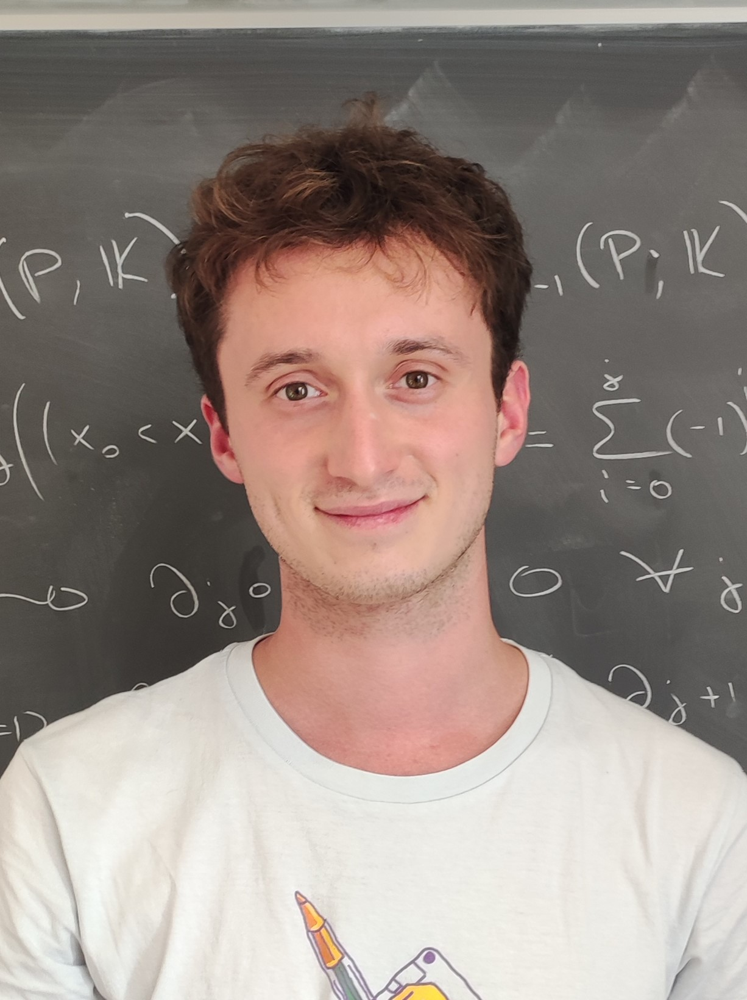

About Me
Currently, I am a PhD student of at Université Gustave Eiffel (Marne-le-Vallée, France). I am currently working, under the supervision of Valentin Bonzom and Philippe Nadeau, on some fascinating links between the study of combinatorial maps and algebraic combinatorics (problems related to Jack and Macdonald symmetric functions).
Previously, I did my Master's Degree at the University of Pisa where I worked under the supervision of prof. Michele D'Adderio to study a combinatorial structure called "Sandpile" and some results related to symmetric functions.
Before that, I got my Bachelor's Degree at the University of Pisa in 2023, presenting a thesis (with supervisor prof. Michele D'Adderio) on poset topology and group representation theory, working in particular with the notion of EL-shellability.
Here you can find my Curriculum Vitae (updated to 8th Oct 2025):
Since my second year as Undergraduate, I have been interested in combinatorics: it all started with a course on group representation theory which introduced me to symmetric functions and Young tableaux.
I really liked the combinatorial approach of associating simpler (and manageable by hand) structures to complex mathematical objects. Still today this approach is at the center of my research interests: making interesting things more intuitive!
Going into more details, some topics that got my attention are:
